Goal4 · Debug Lab review only. Original native XCTest captures from passed phone and iPad routes: opening → Stone → Flint → paid craft wait → close/reopen → three Tools → spend once → Stockyard → relaunch. No normal activation, new art or physical-device/human acceptance claim.
Product e8a1e360725c0deb32dc125669f78f6d2257bb78. Exact reports, hashes and capture metadata · Deterministic balance trace · Delivery and failed attempts
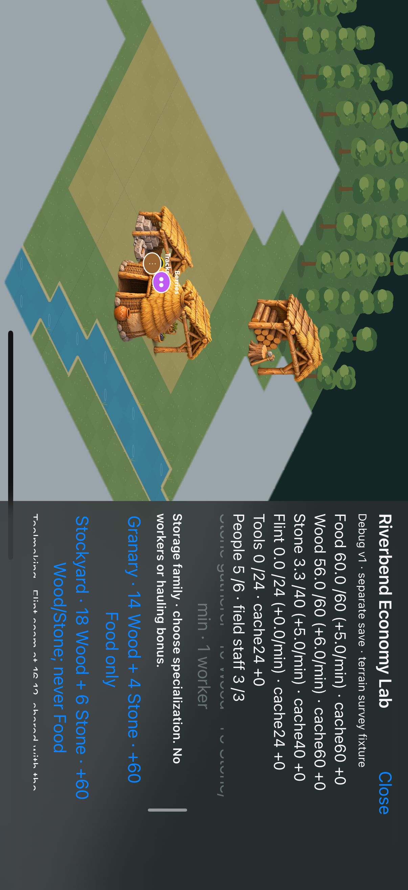
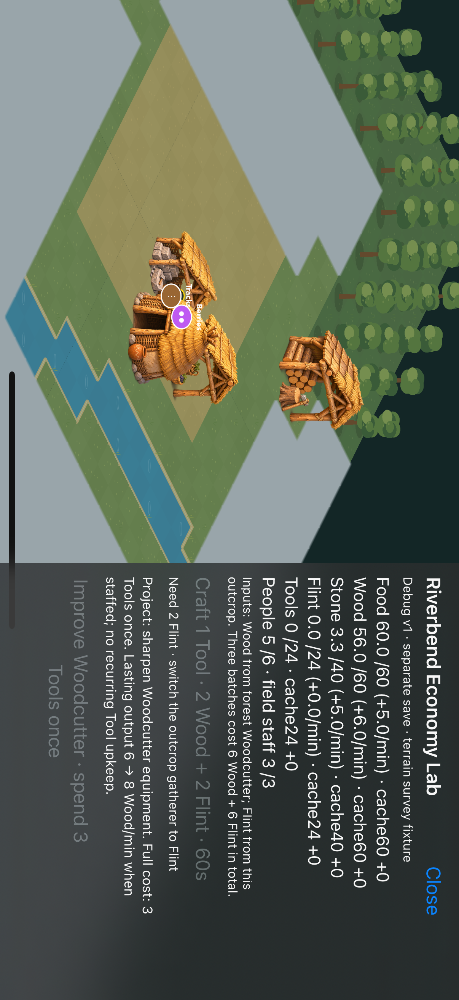
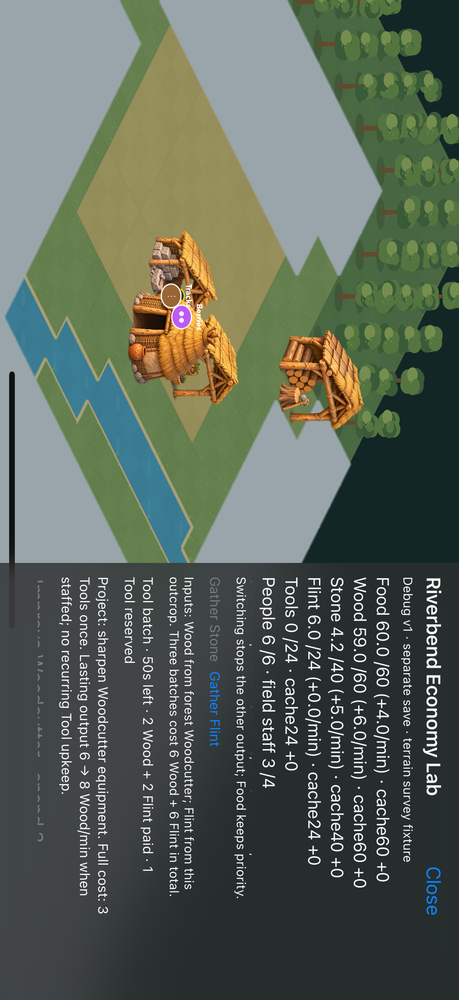
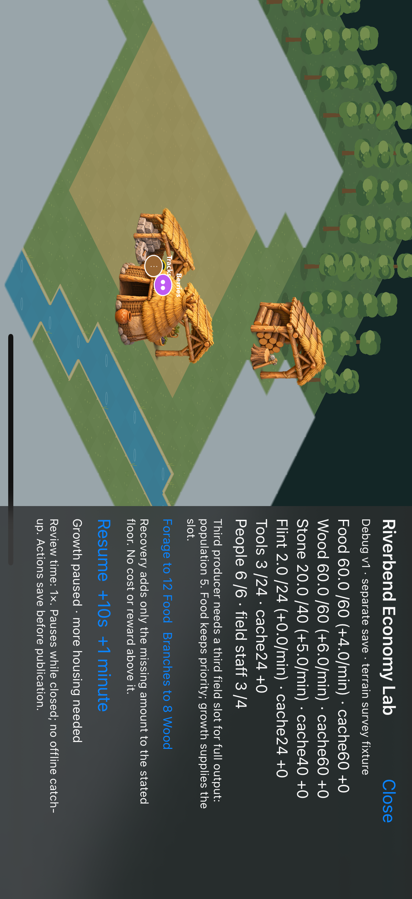
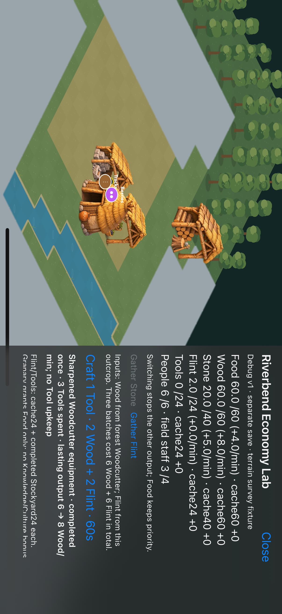
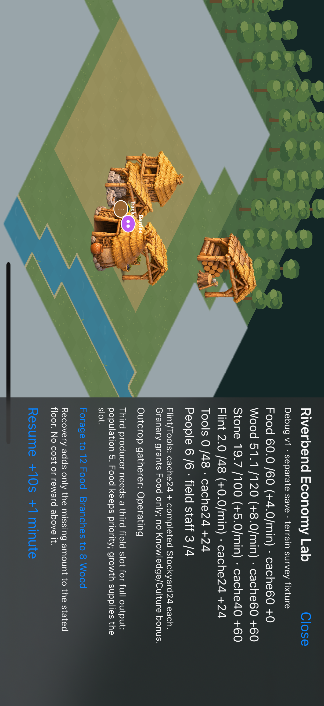
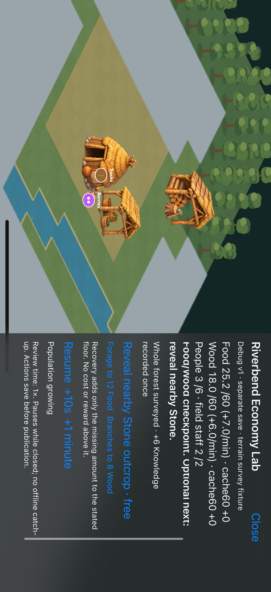
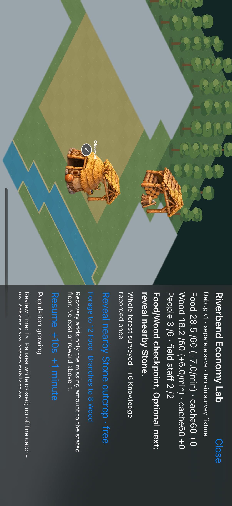
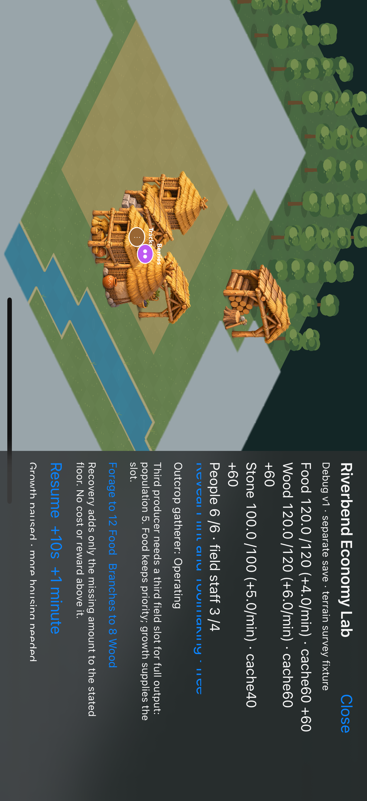
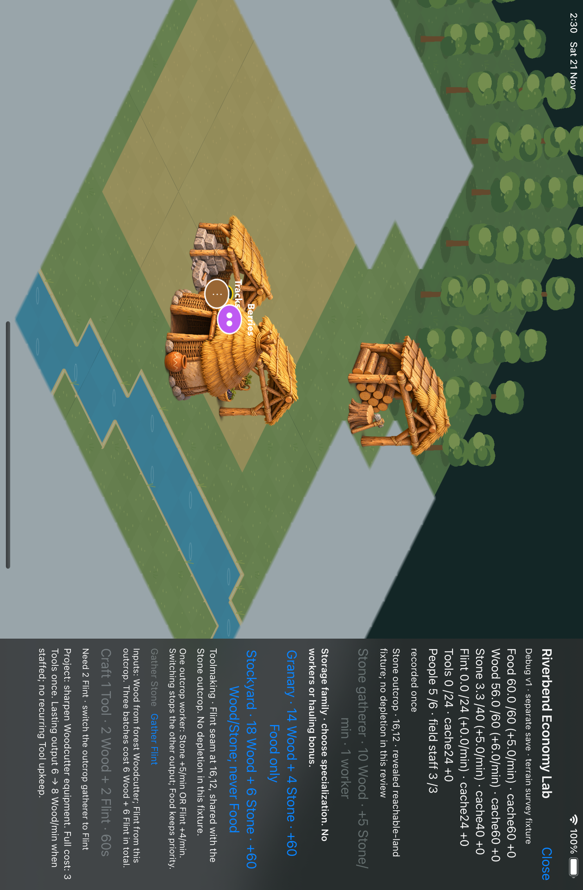
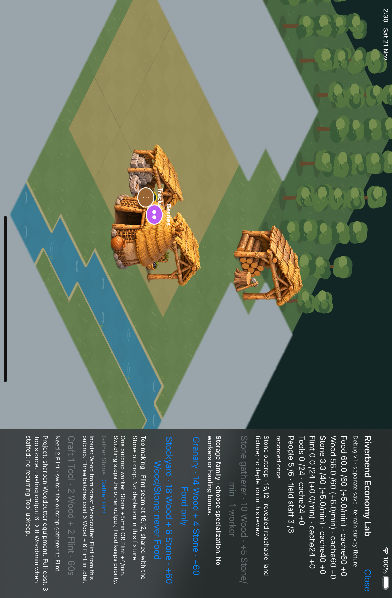
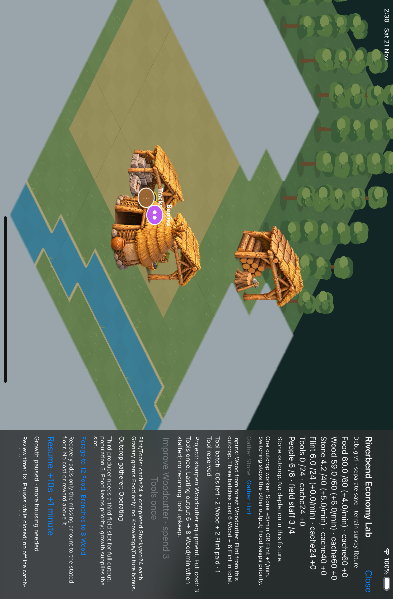
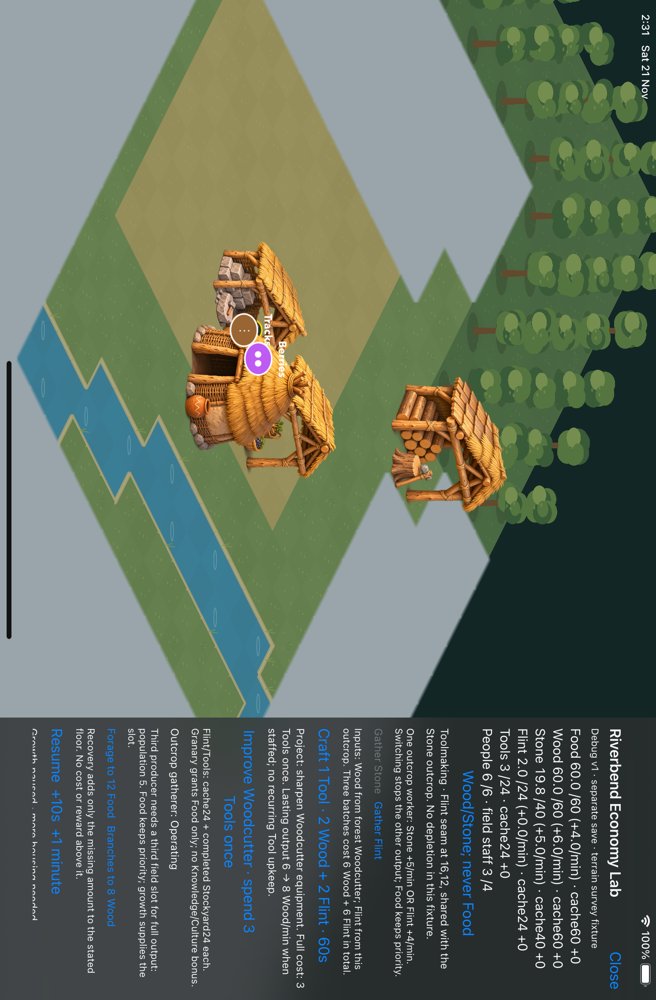
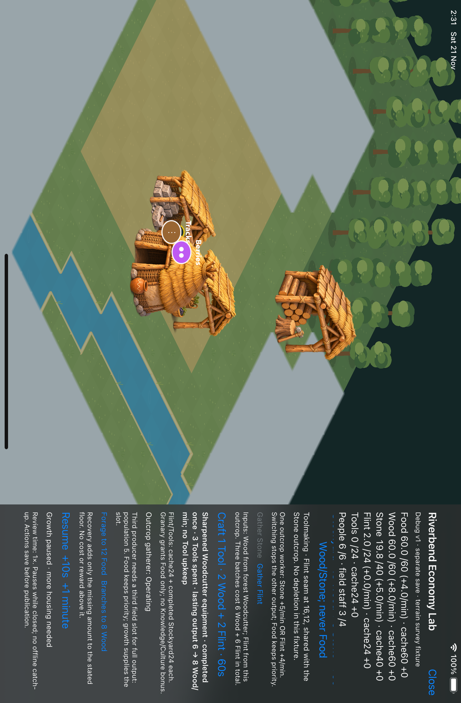
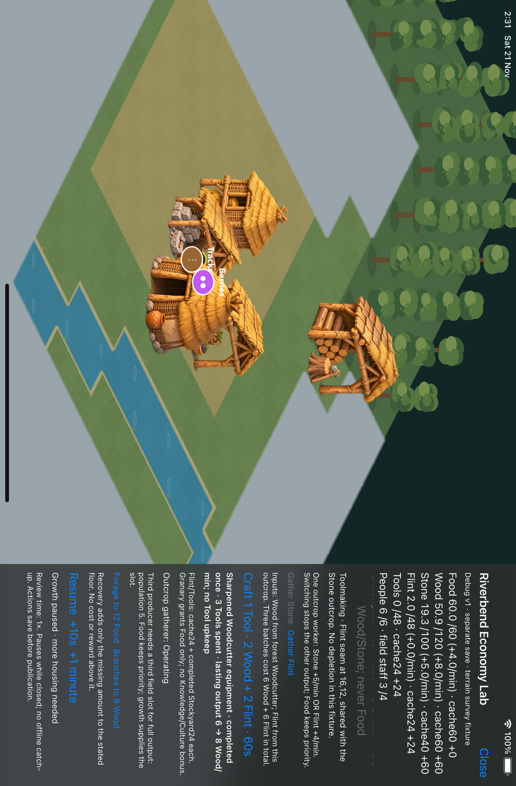
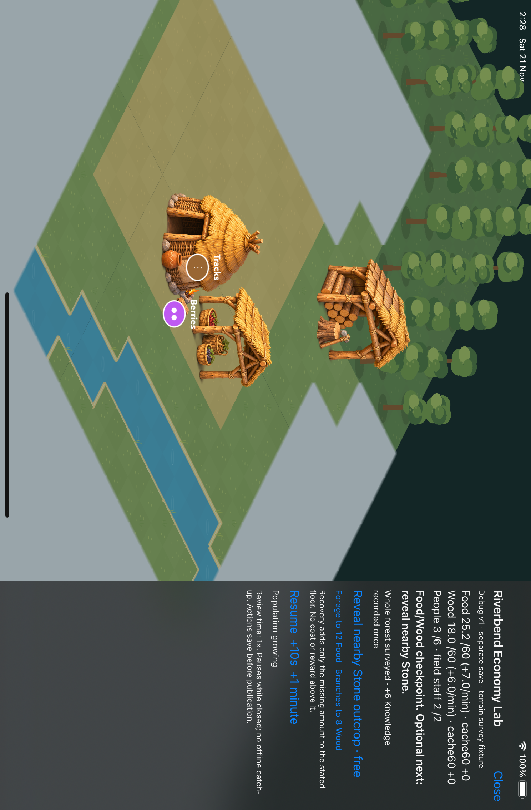
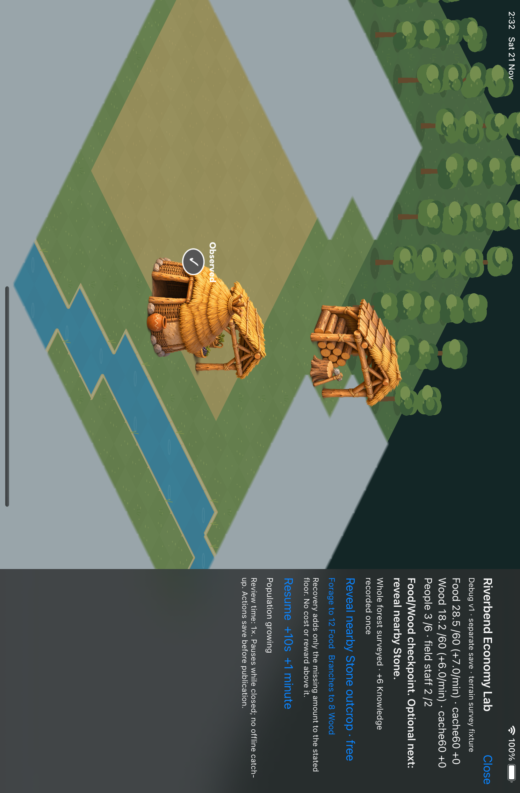
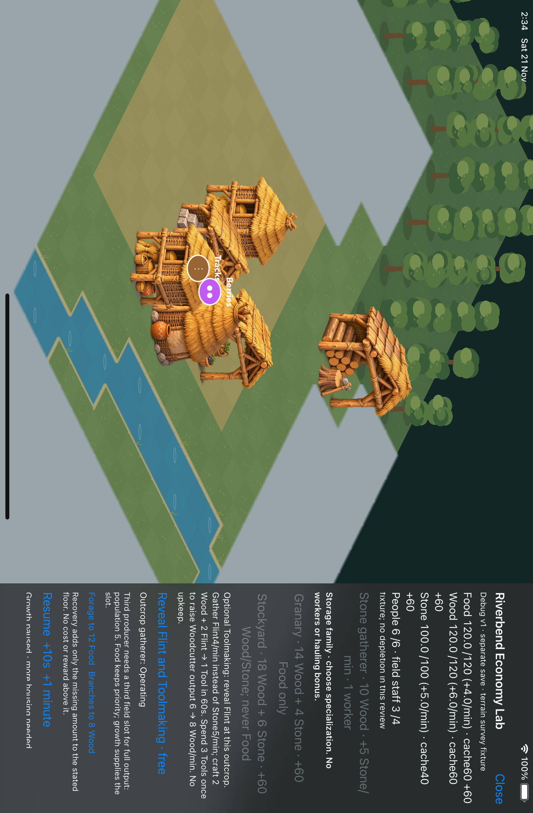
Inherited glyph occlusion and find-anchor overlap remain. Compact phone controls require scrolling. Actual rates and payments are verified; novice pacing, noticing/enjoyment and physical metrics are unmeasured. Failed phone screenshots are separate from this passed gallery.